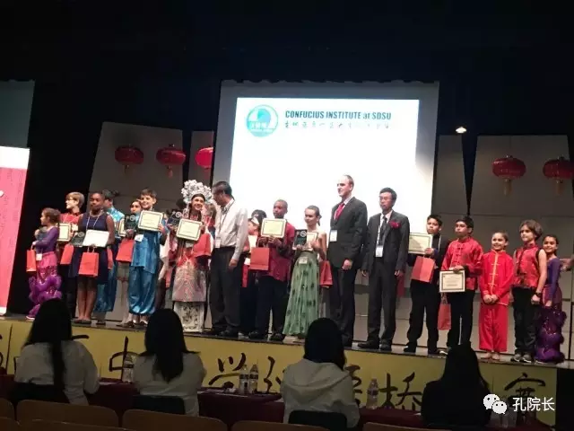
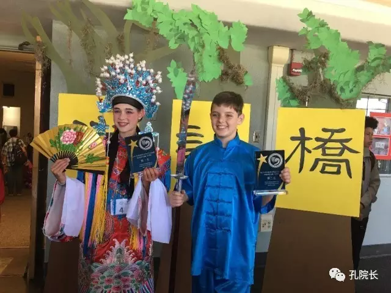
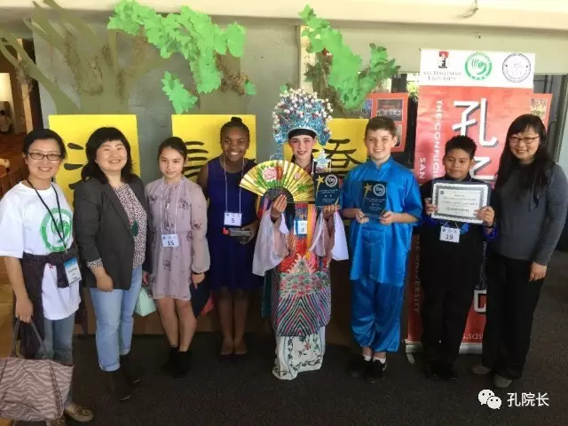

案例丨美国加州太平洋海滨中学沉浸式教学
 296
296
近期， 2017年“汉语桥”中小学生中文比赛美西南地区预赛在圣地亚哥米逊湾高中礼堂举行。选手们是来自整个美国西南地区（包括夏威夷）的中文学习的佼佼者。选手们通过专题演讲、知识问答和才艺展示三个环节的角逐，圣地亚哥州立大学孔子学院太平洋海滨中学孔子课堂的同学收获了前三名的第一、二名，还获得了“演讲之星”等奖项，他们所取得的优异成绩充分体现了太平洋海滨中学孔子课堂的教学质量和中文水平。当获奖的学生们精神抖擞地走上主席台领取奖杯的时候，作为他们的中文老师，我的内心充满了喜悦和自豪，帮助他们学习中文、助力他们备战比赛的场景历历在目。

汉语桥比赛初中组颁奖现场

太平洋海滨中学马慧玫、尚克斯荣获第一名和第二名
团结合作 用心培育
太平洋海滨中学取得如此骄人的成绩，并非我们始料不及，而是意料之中的事情。一分耕耘，一分收获，平时教学中的勤勉、用心，加上赛前的充分准备，保证了学生们大赛中的出色表现和优异成绩。
太平洋海滨中学6、7年级中文沉浸班的学生都是从小学，甚至从幼儿园就开始了汉语沉浸式教学（部分学生来自我们孔子学院的巴纳德亚太语言学校孔子课堂），在完全中文的语言环境中，学生们打下了良好的语言基础，他们升入太平洋海滨中学后继续接受汉语沉浸教育。初中阶段是身心发育快速增长的阶段，我们的学生思维活跃，很难让他们安静地听老师讲授或者不断地重复固定的语言结构，为保证教学效果，使学生搞懂、学会，我们所采取的课堂组织形式主要是小组研讨和做项目，为此我们每个沉浸班配备了3名中文教师，方便学生跟老师用中文交流，一天5节课，共计5个小时，我们就像上了发条的钟表，在课堂上不断地走，不停地说。我形容自己每天早上如炮弹一样发射出去，来到学校后上课、复印材料、批改作业以及登录成绩，像旋转的陀螺一刻不歇，直至下午三点半放学，才拖着疲惫的身体回家。苦的是老师，受益的是学生。来太平洋海滨中学任教半年以来，我深切地感到，越来越多的学生喜欢用中文与老师交流了， 他们更愿意接受老师的建议和指导，他们的中文听说能力也有了很大的提升。当人们夸赞“汉语桥”选手们日益标准的发音和语调时，我们对此并不感到惊讶，因为我们学校已经有一批学生达到了这样的中文水平，特别突出的学生讲话几乎可以和本土的中国人媲美。
“凡事预则立，不预则废。” 事先的计划和准备保证了我校选手发挥出最好的水平。今年1月18日我们接到“汉语桥”比赛的官方正式通知，但实际上，我们提前一个多月就已经开始筹划和安排准备比赛的事宜。上届“汉语桥”比赛中，成绩优秀的马慧玫（Leah Markworth）做了精心准备，意欲夺冠，结果得了第二名，伤心失望的她在现场就忍不住泪如泉涌，当时的场景老师们看了也很揪心，今年我们一定要助她一臂之力，让这个倔强好强的女孩梦想成真。一方面我们在提升她的汉语语言水平和实际运用能力上下功夫，无论课上课下，我们总是鼓励她进行中文交流，遇到不明白的地方，我们会更耐心地讲解语法上的差别，一边肯定她的能力，一边建议她自己尝试举一反三，去发掘更多汉语学习的乐趣。根据她的实际水平，我们为她增加了具有挑战性的功课，“你的能力可以做得更多、更好！”，这种肯定不会给她压力，反而很适合这个不服输的倔强女孩，使她在汉语学习中找到非常高的乐趣。另一方面，我们告诉慧玫失败和挫折是人生的宝贵财富，所有的努力都不会被辜负，鼓励她挑战自己。在规划才艺表演项目时，我们建议她不要选择已经非常熟悉的演唱中文歌、表演越剧，可以考虑另辟蹊径，出奇制胜。慧玫主动提出学习具有挑战性的京剧演唱“贵妃醉酒”，由于准备时间早，她有比较充裕的时间练习，听到她字正腔圆的演唱，看到她形神并举的表演，我们频频点头，称赞她很有几分中国传统京剧的味道，肯定的话语给了她很大的鼓舞和信心。就这样，在老师的帮助和鼓励下，慧玫凭借扎实的中文功底和自己出色的表现，以明显优势获得初中组比赛第一名。
团队合作，形成合力。 “汉语桥”准备之初，我们几个汉语老师为此专门开会商议各项组织工作，进行了具体的分工，并制定了进度表。虽然日常的教学工作已经是超负荷，但是我们一致决定利用中午吃饭时间和下午放学之后的时间，加班给学生进行额外的辅导。张博岩老师有往年大赛辅导经验，负责统筹安排，我们两位初次经历“汉语桥”比赛的汉办老师则负责各项具体工作，从学生报名到演讲稿修改，从知识问答题的复习到才艺表演的指导，从挑选、剪辑背景音乐到准备服装道具，张老师都细心地一一过问，并把她的经验分享给我们。在我们的帮助下，7名选手的演讲稿都是几易其稿，从遣词造句，到中国元素，再到引经据典，最后的定稿跟初稿完全变了样，6年级的林娜最终能够获得“演讲之星”，与她稿子的高质量有很大关系。在辅导学生备战“汉语桥”过程中，我们从语音语调到面部表情，从入场步态到语气手势，细致地为学生一一地讲解，提高他们的演讲技巧，力求展示时准确到位。在比赛前两天，3月15日放学后，我们让所有参赛选手按照比赛要求，进行了一场模拟比赛，并为每名选手进行点评，通过这一活动，选手们一方面得到了热身和锻炼，另一方面明白了自己哪些方面需要加强和提高，在随后的两天里有针对性地练习，才有了最终比赛中的最好发挥。
当今社会，每个人都需要具备领导力，有了好的领导力，就可以正面地影响他人，得到满意的结果。做教育就是做领导，领导的核心是激励别人。老师能不能在课堂上激发出学生学习的动力，让他们学到更多，看的是老师的领导力。在准备“汉语桥”的过程中，太平洋海滨中学的中文教师和学生形成了一个团队，我们明白，我们的对手来自整个美国西南地区，并且他们大多数都是中文沉浸班的学生，要想让我们的学生在比赛中赛出好成绩，必须发挥我们团队的整体优势。7个参赛选手每个人都有自己独特的性格特点，他们或聪慧好学，或沉静内敛，或热情奔放，或腼腆内向，了解学生，把握他们的思想动态，讲求方式方法，就能够调动他们的正能量，克服他们的缺点弱点，从而把工作做好，取得好成绩。
英俊帅气、童稚未消的尚克斯（Christopher Santy）是太平洋海滨中学7年级中文沉浸班的学生，他在这次比赛中取得了第二名的好成绩。如果说马慧玫摘得第一是实至名归、水到渠成的事情，尚克斯能否获奖却一直是我们很忐忑的一件事。这倒不是说克斯没有这个实力，相反，克斯自小聪慧，具有极高的语言学习天赋，他的地理历史知识储备深厚，是个难得的好苗子。但是，克斯的聪明和天赋让他没有经历过过多的失败，面对比赛他变得无法控制自己的得失心，忽上忽下的成绩又让他紧张，他对比赛开始产生明显的抵触情绪，作为老师，我们能够理解他的压力和倔强带来的小小叛逆，大赛临近，尽快做通思想工作，扭转他的态度却是非常必要的。我们适时地找他谈心，肯定他中文学习中表现优秀的一面，并告诉他，“克斯，你已经报了名，也已经开始准备，既然做出了选择，我们为什么不把最好的自己呈现给大家呢？老师知道你中文很棒，大家也期待着你的出色表现。”一席话，鼓起他争强好胜的士气。在指导慧玫的时候，我们经常有意识地把克斯叫过来，让他们成为彼此的镜子，成为彼此的挑战对象，让两个优秀的学生相互促进，共同进步。慢慢地，克斯熟悉了备战的过程，不再一味地盯着成绩，这有效地缓解了他心底的紧张，大量的练习为他打下良好的基础，成绩的进步就变成水到渠成的事。
当克斯站在“汉语桥”的赛场上，他的表现可谓让人刮目相看。与去年“汉语桥”上的表现相比，克斯今年变得成熟大气了。他的演讲声音洪亮，充满自信。知识问答部分回答问题聪明机智，表现出良好的心理素质和扎实的语言功底。才艺表演中国功夫自然流畅，一气呵成。
“我永远都不会放弃中文学习！”，“我要学好中文，让人们了解更多的中国！”，“你不知道我有多么喜爱中文！”，“学好中文，我会有那么多的机会！”，“我要做一名文化大使！”学生们用真诚的话语表达着对汉语的挚爱和他们的追求，我们也更多的了解了自己远离亲人、来到异国他乡的意义。传授汉语语言，传播中华文化，这是我们的使命，同时也让我们认知到在大洋彼岸有这群可爱的孩子，他们渴望学习汉语语言和了解东方文化，而我们是被需要的，这也是我们的价值所在，为此付出再多也是值得的，我们的工作虽苦犹甜！

比赛之后的师生合影
作者简介
刘敏：圣地亚哥州立大学孔子学院太平洋海滨中学孔子课堂汉语教师。